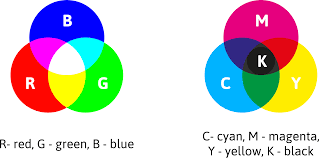

Kleurmodellen zijn systemen die worden gebruikt om kleuren op een gestructureerde en reproduceerbare manier te beschrijven. Ze worden vaak gebruikt in grafische vormgeving, fotografie, drukwerk, digitale beeldverwerking en andere toepassingen waar kleur nauwkeurig moet worden beheerd en gereproduceerd. .
Kleurcomponenten: Kleurmodellen zijn gebaseerd op het idee dat kleuren kunnen worden beschreven als een combinatie van verschillende componenten. De meest voorkomende componenten zijn: Hue (Tint): Dit verwijst naar het type kleur, zoals rood, blauw, groen, enzovoort. Het wordt vaak gemeten in graden rond een kleurencirkel (bijvoorbeeld 0° voor rood, 120° voor groen, 240° voor blauw). Verzadiging: Verzadiging bepaalt de intensiteit of zuiverheid van een kleur. Een sterk verzadigde kleur is levendig en helder, terwijl een zwak verzadigde kleur meer grijs lijkt. Verzadiging wordt vaak uitgedrukt als een percentage. Helderheid of Lichtheid: Dit geeft aan hoe licht of donker een kleur is. Bij sommige modellen wordt lichtheid (brightness) gebruikt, terwijl andere lichtheid (lightness) gebruiken. Hoe hoger de waarde, hoe lichter de kleur.
Kleurruimte: Een kleurruimte is een driedimensionale ruimte waarin kleuren worden weergegeven door hun componenten. Bijvoorbeeld, het RGB-kleurmodel heeft een kleurruimte waarin elke kleur wordt beschreven door drie waarden (Rood, Groen, Blauw) die zich als coördinaten in de ruimte gedragen.
Kleurcreatie: Elk kleurmodel heeft een methode voor het maken van kleuren door verschillende componenten op een specifieke manier te combineren. Bijvoorbeeld, in het RGB-kleurmodel worden kleuren gemaakt door de intensiteiten van rood, groen en blauw licht te mengen.
Kleurstandaarden: Er zijn verschillende kleurstandaarden en kleurmodellen die worden gebruikt in verschillende industrieën en toepassingen. Deze standaarden zorgen ervoor dat kleuren op een consistente manier worden gereproduceerd en gecommuniceerd.
Kleurweergave: Nadat een kleur is gecreëerd binnen een kleurmodel, moet deze worden omgezet in een kleur die op een beeldscherm, op papier of in andere media kan worden weergegeven. Dit vereist vaak kleurprofielen en conversiealgoritmen om ervoor te zorgen dat de kleuren consistent worden weergegeven.
Bekijk hier een uitlegvideo over Kleurmodellen
Bekijk de video op YouTube